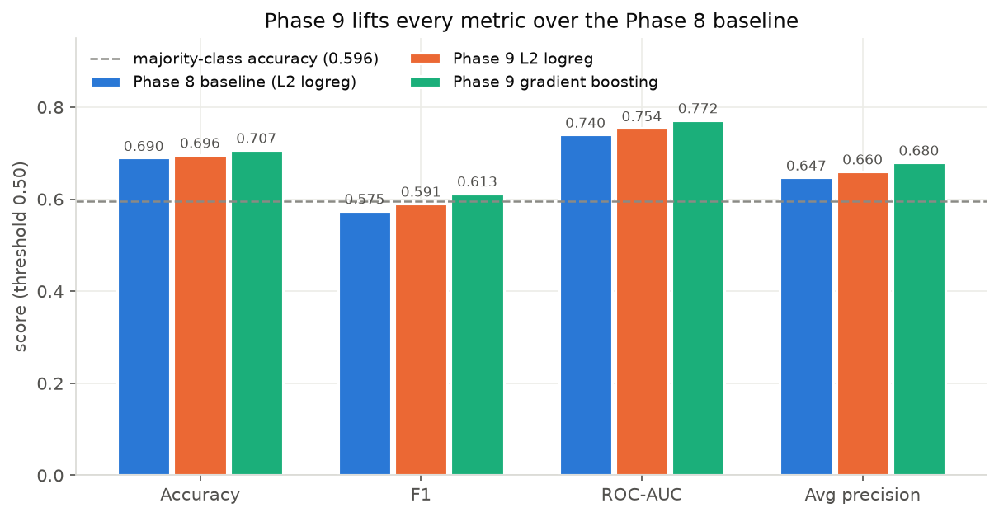
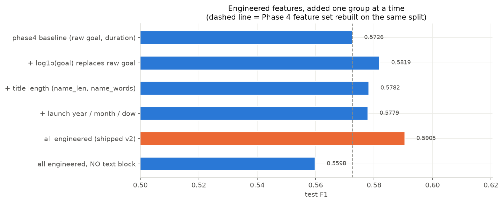
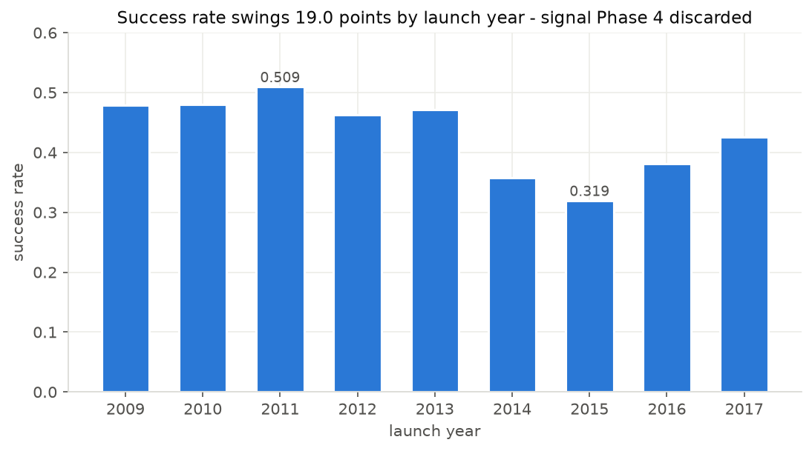
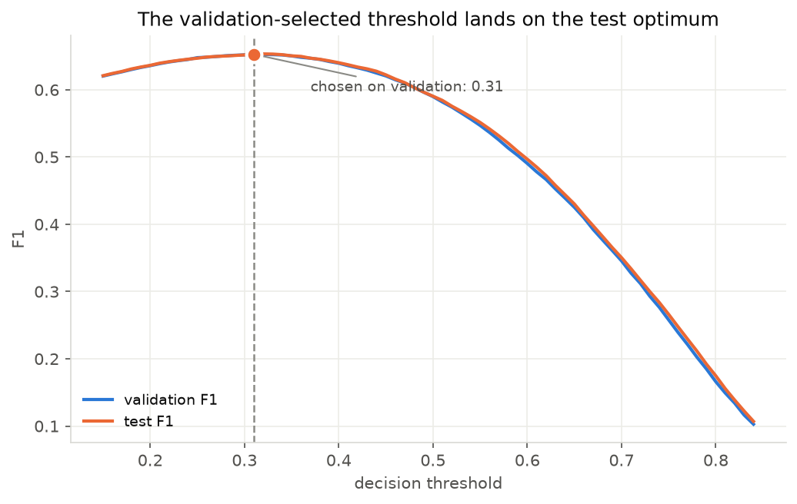
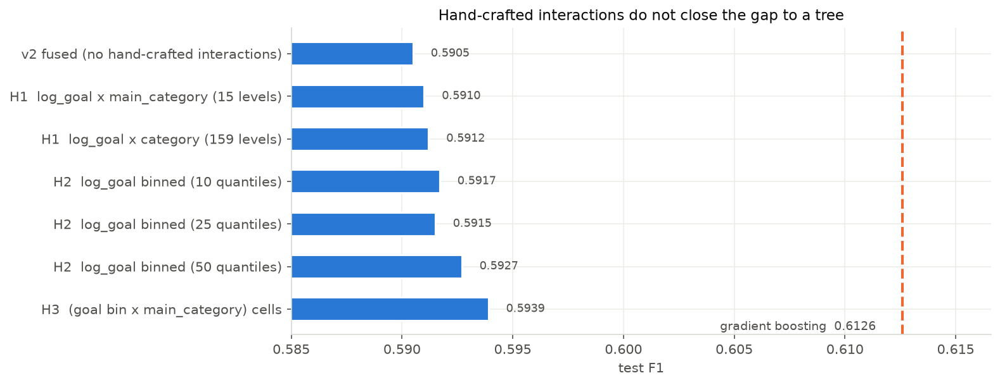

ML Summer Project · Multi-modal feature fusion
Predicting whether a Kickstarter campaign gets funded
A leakage-free model that scores a campaign at launch time — fusing the wording of its title with its structured metadata. It reaches 70.7% test accuracy, clearing the best published benchmark that uses only pre-launch information. The model runs live in your browser further down this page.
Results
Every number here is on a held-out test set of 66,183 campaigns, using only information available before a campaign launched. Outcome columns — pledged, backers, usd_pledged_real — are excluded by design, and nothing was tuned on the test set.
Model comparison
| Model | Accuracy | F1 | ROC-AUC | Avg prec. |
|---|---|---|---|---|
| Majority baseline | 0.596 | — | — | — |
| Earlier baseline (L2 logistic regression) | 0.690 | 0.575 | 0.740 | 0.647 |
| L2 logistic regression, improved features | 0.696 | 0.591 | 0.754 | 0.660 |
| Gradient boosting (tabular + text SVD) | 0.707 | 0.613 | 0.772 | 0.680 |

How this compares to published work
Comparing accuracy on this task is mostly an exercise in auditing what went into someone's feature matrix. Plenty of published results look far better than ours until you check which columns they used.
| Source | Reported | Fair comparison? |
|---|---|---|
| Springer 2019 — Kickstarter at Launch Time (XGBoost) | 69.8% | Yes — launch-time features only |
| This project (gradient boosting) | 70.7% | Yes — the benchmark to beat |
| Same-dataset LightGBM (public repo) | 70.3% | No — uses pledge-per-backer |
| Assorted blog posts and repos | 86–94% | No — use backers, i.e. the outcome |
| University thesis 2024 (Random Forest) | 88.3% | No — in-sample score; its own CV figure is ~77% |
| Stanford CS229 — Plead or Pitch? | F1 0.79 | No — uses full campaign descriptions |
At the F1-optimal threshold of 0.31 the same model reaches F1 0.653 and recall 0.82, but accuracy drops to 0.649 — below the majority baseline. That is the correct trade only if missing a fundable campaign costs more than a false alarm. Quoting the best accuracy and the best F1 from two different thresholds would be misleading, so both are stated with the threshold attached.
Try the model
This is the real trained model, not a mock-up. A logistic regression is its coefficients — p = σ(b + Σ wᵢxᵢ) — so the vocabulary, IDF weights, coefficients and scaler statistics are exported to a 23 KB file and the arithmetic runs in your browser. No server is involved, and the output is verified to match scikit-learn's to within 6×10-7.
Because the model is linear, it can show its work: every token's contribution to the log-odds is exactly its coefficient times its TF-IDF weight. That is why the demo runs the logistic regression rather than the more accurate boosting model — a tree cannot break its reasoning down like this.
Campaign details
Prediction
What drove this
contributions are to the log-odds, before the sigmoid
It reflects patterns in Kickstarter campaigns from 2009–2017, so treat it as a description of that history rather than advice about a campaign today. A ~70% model is wrong roughly three times in ten, and title wording is a weak signal — the dataset has no campaign description, only a title of about four words. Read the direction of the contributions, not the second decimal place of the probability.
How it works
The core of the project is multi-modal fusion: text and tabular features are unlike in shape — one is a wide sparse matrix, the other is narrow and dense — and the task is to combine them into one matrix a single model can learn from.
Keeping the matrix sparse matters: densifying 2,743 columns across 212,000 rows would cost gigabytes, while the sparse form is 28 MB because only 0.3% of entries are non-zero.
Which features actually earned their place
Each row below refits the vectoriser and scaler on the training block alone, so the differences are attributable rather than guesses.


Choosing the threshold without cheating
An earlier version of this project picked both the regularisation strength and the decision threshold by looking at the test set. That is selection-on-test: it makes the reported number optimistic by an unknown amount, and leaves no honest answer to "so how did you choose 0.31?"
The pipeline now carves a validation split out of the training data and makes both choices there. The test set is touched once, at the end.

What didn't work
The most useful result in this project is a hypothesis that turned out to be wrong, and is documented rather than quietly dropped.
Gradient boosting beats logistic regression here by about two F1 points. The intuitive explanation is a missing interaction: a $10,000 goal is routine for a Music project and brutal for a Technology one, and a linear model that adds w_goal + w_technology cannot express that.
So we built the interaction — six different ways, up to a full grid of goal-quantile × category cells at 150 extra columns, which is the most expressive hand-crafted form short of an actual tree.

The tree's advantage is not one nameable missing term. It is diffuse non-linearity spread across many features — exactly the thing hand-engineering cannot reach and a tree finds for free.
So the interaction columns are not in the shipped model, and the table above is why. Time spent inventing more interaction features on this dataset would be time wasted.
Also ruled out
backers or pledged, which are known only after a campaign runs. That is not a better model, it is a different and much easier problem.How it's tested
Every headline number on this page is only meaningful if no outcome column reached the model and nothing fitted on training data ever saw validation or test. Those properties are easy to break silently with a one-line edit, so they are asserted in a test suite rather than trusted.
What the suite guards
- Leakage. No outcome column may be configured as a feature, and every non-text column in the fused matrix must trace back to a declared config entry.
- Fit-on-train-only. The vocabulary must be a subset of tokens appearing in the training block, and the scaler's row count must equal the training block's — which catches the classic mistake of fitting before splitting.
- Split integrity. Train, validation and test must be disjoint and must together cover every row exactly once.
- Browser parity. The exported model is re-scored from the JSON alone and must match scikit-learn's output. Without this, the live demo could quietly mislead visitors while every number in the repository stayed correct.
- Published claims. The metrics on this page are asserted as floors, so a future change that degrades the model fails the build instead of silently making the website wrong.
- Documented findings. Including the negative result — if hand-crafted interactions ever start helping more than documented, a test fails and tells us to update the write-up.
One test exists purely as a regression guard for a real bug: category codes came back as 8-bit integers, so multiplying by the bin count silently overflowed to negative array indices past level 127 and crashed on the 159-level column. The test builds an interaction block on that column and asserts the result stays non-negative.
# run the suite pytest # reproduce every number and figure on this page python -m src.train # fit, evaluate, write artifacts + figures python -m src.ablations # feature and interaction ablation tables python -m src.export_web # regenerate the browser model (verifies parity)
Code & documentation
Where things live
notebooks/01–08— the original pipeline, kept frozen as the record of how each stage was validatednotebooks/09_improved_pipeline.ipynb— the feature work, validation split and ceiling checksrc/— the promoted, parameterised pipeline: cleaning, fusion, training, ablations, figures, web exporttests/— the 55-test suite described abovedocs/phase9-improvements.md— the full write-up, with every measurement and the benchmark comparison
Further reading
- Leadership report — project framing, team structure and contributions
- Concept learning guide — TF-IDF, fusion, regularisation and metrics explained from scratch